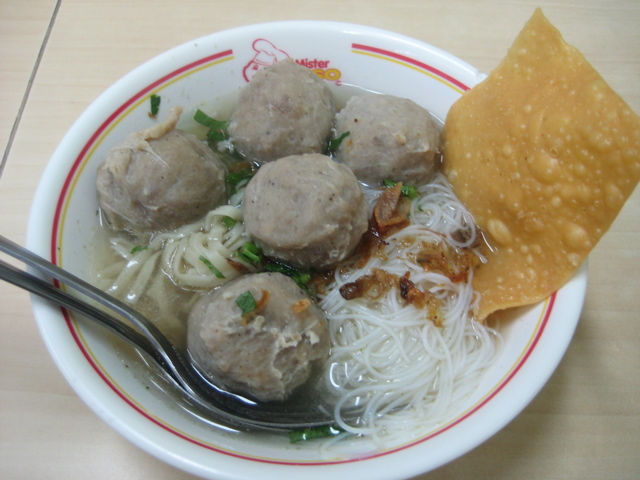

Bakso

Description
Bakso is a beloved Indonesian meatball soup that features flavorful meatballs made from a mixture of ground beef, tapioca starch, and spices. The meatballs are typically served in a savory broth, accompanied by noodles, vegetables, and garnished with fried shallots and fresh herbs. This comforting dish is a staple in Indonesian cuisine and is enjoyed by people of all ages for its rich taste and satisfying texture.
Ingredients
- 200 grams of ground beef
- 50 grams of tapioca starch
Steps
- In a mixing bowl, combine the ground beef, tapioca starch, minced garlic, salt, pepper, and any additional spices you prefer. Mix well until the ingredients are fully incorporated.
- Shape the mixture into small meatballs using your hands or a spoon. Make sure they are uniform in size for even cooking.
- Bring a pot of water to a boil. Gently drop the meatballs into the boiling water and cook until they float to the surface, which indicates they are cooked through. This usually takes about 5-7 minutes.
- Remove the cooked meatballs from the water and set them aside. You can serve them in a flavorful broth with noodles and vegetables, garnished with fried shallots and fresh herbs for added flavor.
Back to Home